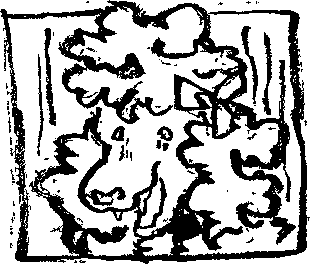
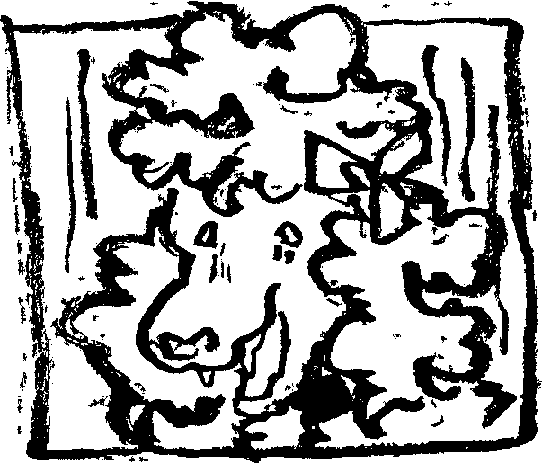

Stare
“You again.” “Fluffypants. Here to help you.” I shake her paw, the massive smile on her face remains. “Why do you wanna help me?” “You look like you need it. Or. Well. I just feel inclined to.” “Well, if you want to help, the best way is to get outta here and start searching. Clearly she’s not here.” Rather than trying to get her off my case, I just decided to accept it. There’s nothing new she’ll find. But instead of heading out, she urges me to sit down. I object, there’s nothing of importance here, yet her glare. Judgemental? Concerned? Everything about her tone and her looks, it keeps me from moving. I take a seat down on a splinter filled stool.
 
